After this class, we will be able to:
- Use
Rfor calculation - Generate simple figures using
ggplot2 - Able to draw the
batmanlogo usingR&ggplot2
Guangchuang Yu
School of Publich Health
After this class, we will be able to:
R for calculationggplot2 batman logo using R & ggplot2
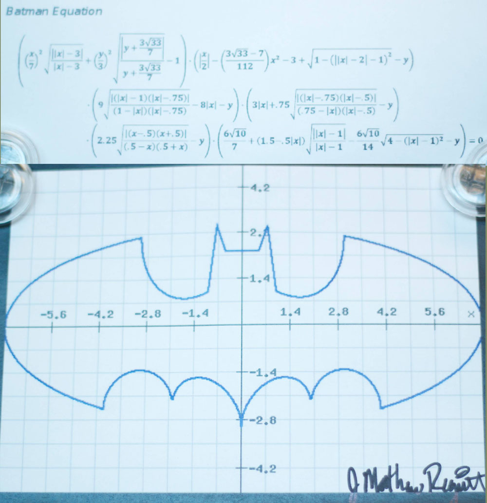
\[\begin{align} & F1: ((\frac{x}{7})^2 \cdot \sqrt{\frac{||x|-3|}{(|x|-3)}}+ (\frac{y}{3})^2 \cdot \sqrt{\frac{|y+3 \cdot \frac{\sqrt{33}}{7}|}{y+3 \cdot \frac{\sqrt{33}}{7}}}-1)\\ & F2: (|\frac{x}{2}|-((3 \cdot \frac{\sqrt{33}-7)}{112}) \cdot x^2-3+\sqrt{1-(||x|-2|-1)^2}-y)\\ & F3: (9 \cdot \sqrt{\frac{|(|x|-1) \cdot (|x|-0.75)|}{((1-|x|) \cdot (|x|-0.75))}}-8 \cdot |x|-y)\\ & F4: (3 \cdot |x|+0.75 \cdot \sqrt{\frac{|(|x|-0.75) \cdot (|x|-0.5)|}{((0.75-|x|) \cdot (|x|-0.5))}}-y)\\ & F5: (2.25 \cdot \sqrt{\frac{|(x-0.5) \cdot (x+0.5)|}{((0.5-x) \cdot (0.5+x))}}-y)\\ & F6: (\frac{6 \cdot \sqrt{10}}{7}+(1.5-0.5 \cdot |x|) \cdot \sqrt{\frac{||x|-1|}{|x|-1}}-(\frac{6 \cdot \sqrt{10}}{14}) \cdot \sqrt{4-(|x|-1)^2}-y) \end{align}\]
Batman Equation: \(F1 \cdot F2 \cdot F3 \cdot F4 \cdot F5 \cdot F6 = 0\)
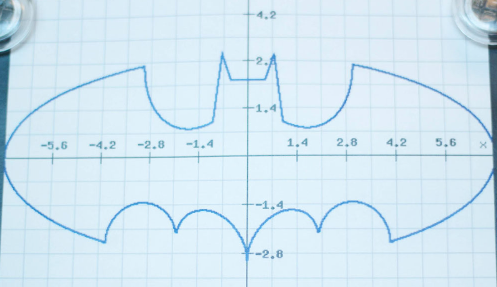 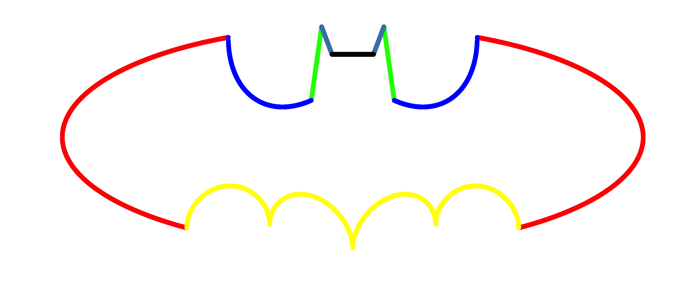
 and
and ggplot2 ?R: Environment for statistical computing and graphics
ggplot2: a plotting system for R, based on the grammar of graphics
R is "the most powerful and flexible statistical programming language in the world."
-- Norman Nie, scholar and co-founder of SPSS
Download and Install R from CRAN http://cran.r-project.org
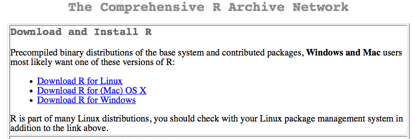
Use the following command to install ggplot2 package:
install.packages("ggplot2")
library(ggplot2)
library(colorspace)
cols <- rainbow_hcl(6)
print(cols)
## [1] "#E495A5" "#C7A76C" "#86B875" "#39BEB1" "#7DB0DD" "#CD99D8"
\[((\frac{x}{7})^2 \cdot \sqrt{\frac{||x|-3|}{(|x|-3)}}+ (\frac{y}{3})^2 \cdot \sqrt{\frac{|y+3 \cdot \frac{\sqrt{33}}{7}|}{y+3 \cdot \frac{\sqrt{33}}{7}}}-1) = 0\]
f1 <- function(x) {
y1 <- 3*sqrt(1-(x/7)^2)
y2 <- -3*sqrt(1-(x/7)^2)
y <- c(y1,y2)
d <- data.frame(x=x,y=y)
d <- d[d$y > -3*sqrt(33)/7,]
return(d)
}
x1 <- c(seq(3, 7, 0.001), seq(-7, -3, 0.001))
d1 <- f1(x1)
p1 <- ggplot(data=d1, aes(x, y)) + geom_point(color=cols[1])
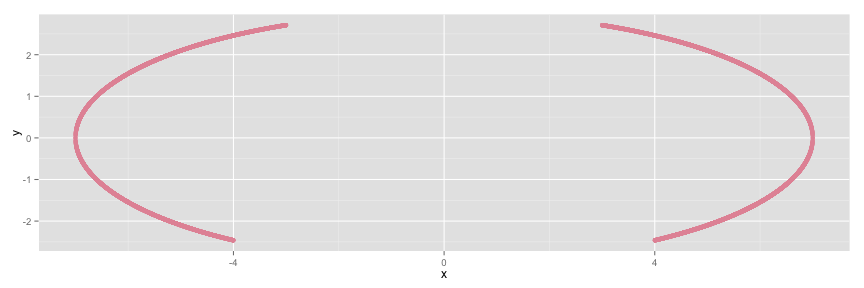
\[(|\frac{x}{2}|-((3 \cdot \frac{\sqrt{33}-7)}{112}) \cdot x^2-3+\sqrt{1-(||x|-2|-1)^2}-y) = 0\]
f2 <- function(x) {
y <- abs(x/2)-(3*sqrt(33)-7)*x^2/112-3 + sqrt(1-(abs(abs(x)-2)-1)^2)
d <- data.frame(x=x, y=y)
return(d)
}
x2 <- seq(-4, 4, 0.001)
d2 <- f2(x2)
p2 <- p1 + geom_point(data=d2, color=cols[2])
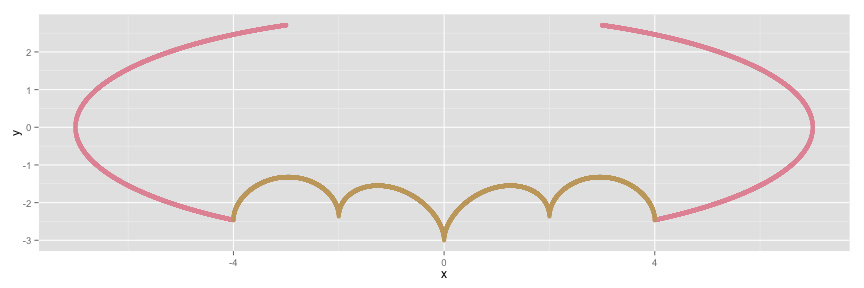
\[(9 \cdot \sqrt{\frac{|(|x|-1) \cdot (|x|-0.75)|}{((1-|x|) \cdot (|x|-0.75))}}-8 \cdot |x|-y) = 0\]
f3 <- function(x) {
y <- 9 - 8 * abs(x)
d <- data.frame(x=x, y=y)
return(d)
}
x3 <- c(seq(0.75, 1, 0.001), seq(-1, -0.75, 0.001))
d3 <- f3(x3)
p3 <- p2 + geom_point(data=d3, color=cols[3])
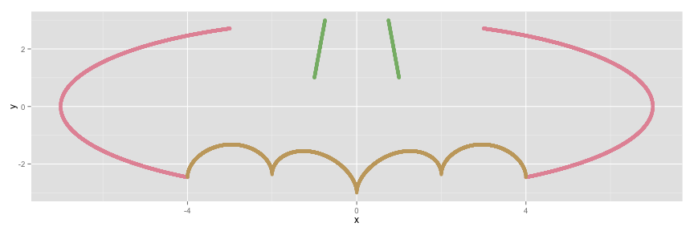
\[(3 \cdot |x|+0.75 \cdot \sqrt{\frac{|(|x|-0.75) \cdot (|x|-0.5)|}{((0.75-|x|) \cdot (|x|-0.5))}}-y) = 0\]
f4 <- function(x) {
y <- 3 * abs(x) + 0.75
d <- data.frame(x=x, y=y)
return(d)
}
x4 <- c(seq(0.5, 0.75, 0.001), seq(-0.75, -0.5, 0.001))
d4 <- f4(x4)
p4 <- p3 + geom_point(data=d4, color=cols[4])
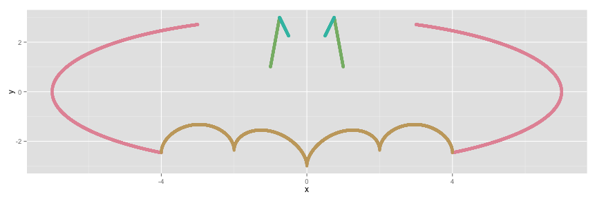
\[(2.25 \cdot \sqrt{\frac{|(x-0.5) \cdot (x+0.5)|}{((0.5-x) \cdot (0.5+x))}}-y) = 0\]
f5 <- function(x) {
y <- rep(2.25, length(x))
d <- data.frame(x, y)
return(d)
}
x5 <- seq(-0.5, 0.5, 0.001)
d5 <- f5(x5)
p5 <- p4 + geom_point(data=d5, color=cols[5])
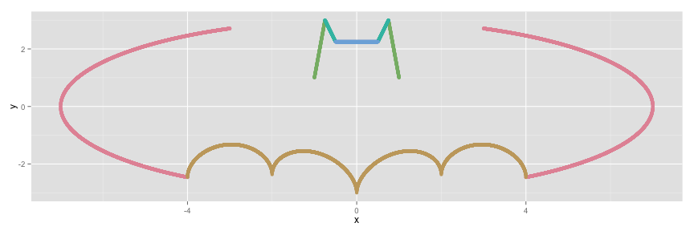
\[(\frac{6 \cdot \sqrt{10}}{7}+(1.5-0.5 \cdot |x|) \cdot \sqrt{\frac{||x|-1|}{|x|-1}}-(\frac{6 \cdot \sqrt{10}}{14}) \cdot \sqrt{4-(|x|-1)^2}-y) = 0\]
f6 <- function(x) {
y <- 6 * sqrt(10)/7 + (1.5 - 0.5 * abs(x)) *
sqrt(abs(abs(x)-1)/(abs(x)-1)) -
6 * sqrt(10)/14 * sqrt(4-(abs(x)-1)^2)
d <- data.frame(x=x, y=y)
return(d)
}
x6 <- c(seq(-3, -1, 0.001), seq(1, 3, 0.001))
d6 <- f6(x6)
p6 <- p5 + geom_point(data=d6, color=cols[6])
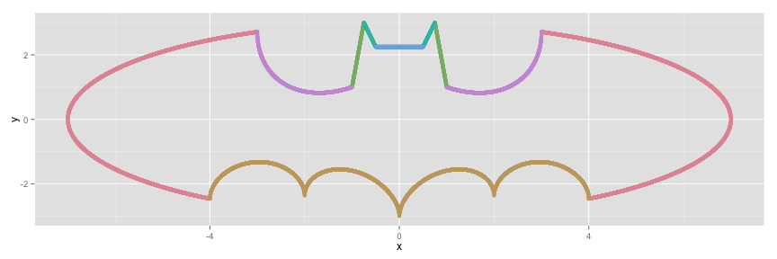
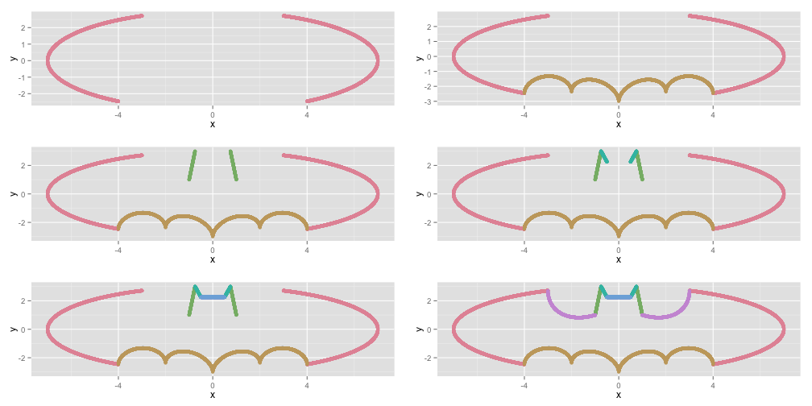
library(magrittr)
dd <- rbind(d1, d2) %>% rbind(., d3) %>% rbind(., d4) %>%
rbind(., d5) %>% rbind(., d6)
n <- 600
dd <- dd[sample(1:nrow(dd), n),]
dd$size <- runif(n, min=0.5, max=15)
dd$color <- factor(sample(1:10, n, TRUE))
dd$alpha <- runif(n, min=0.1, max=0.4)
npoints <- 300
bgPoints <- data.frame(x = runif(npoints, -8, 8),
y = runif(npoints, -4, 4),
size = runif(npoints, 20, 40),
color = factor(sample(1:10, npoints, TRUE)),
alpha = runif(npoints, min=0.05, max=0.15))
data <- rbind(dd, bgPoints)
p <- ggplot(data, aes(x, y, color=color)) + geom_point(alpha=data$alpha, size=data$size)
p + ggtree::theme_tree() + xlab("") + ylab("")
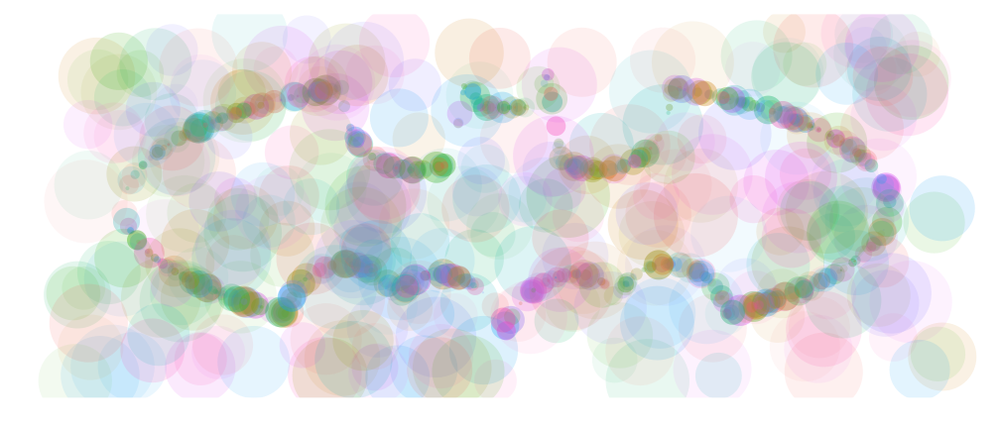